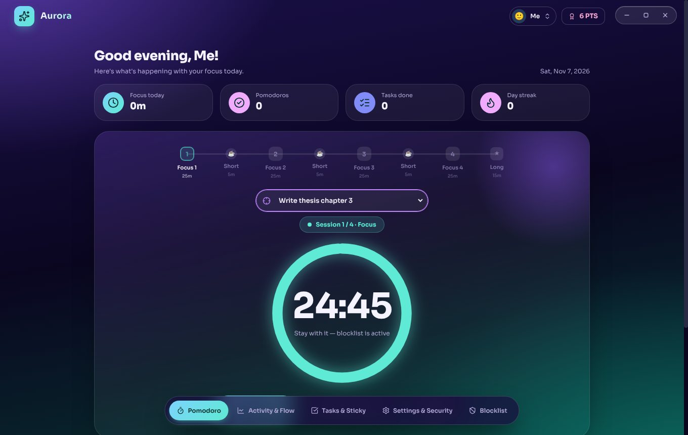
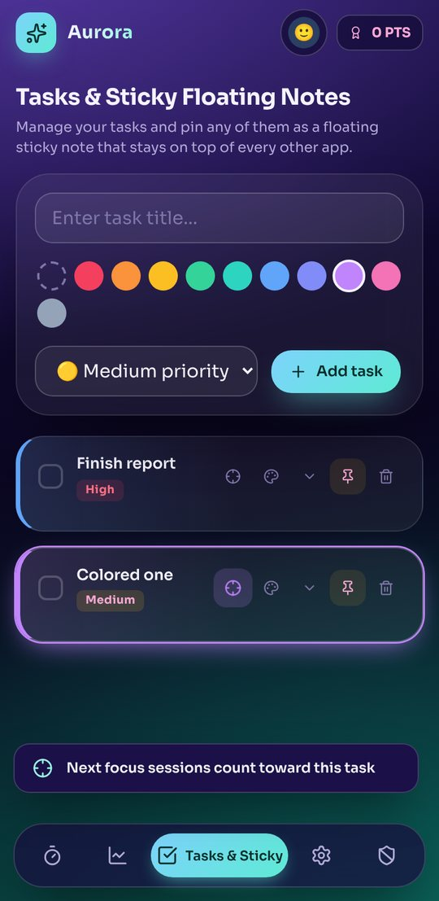
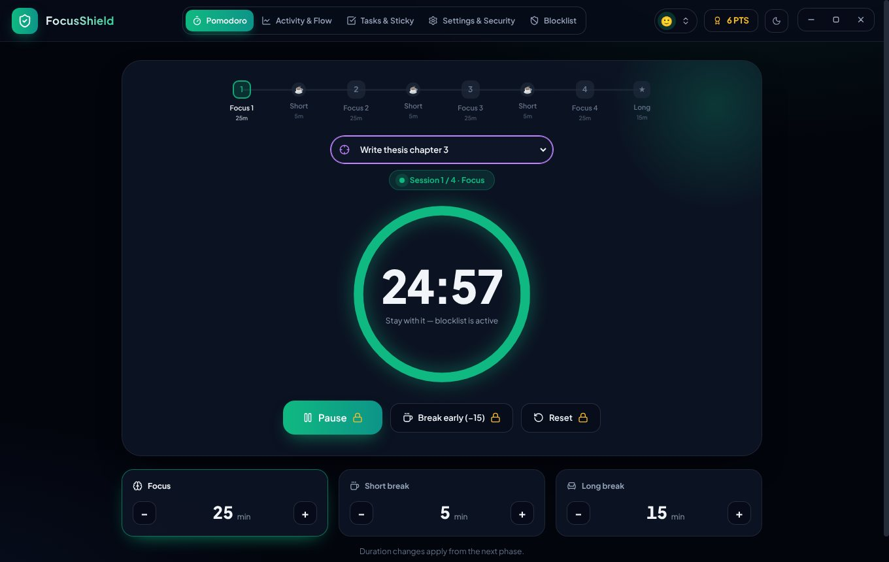
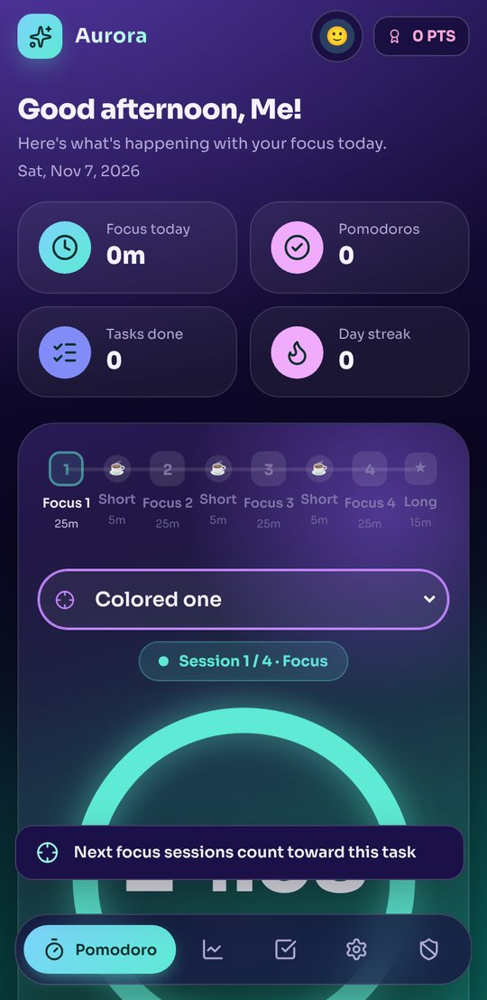
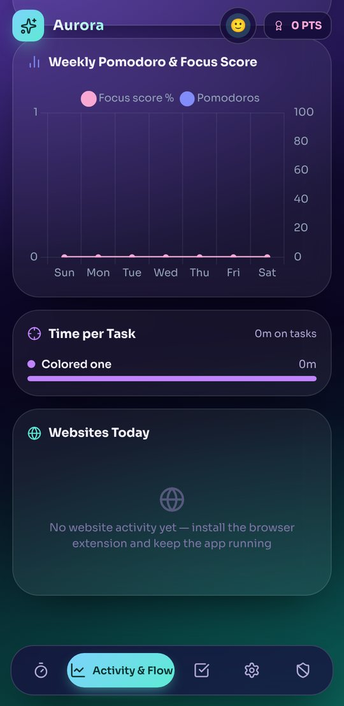
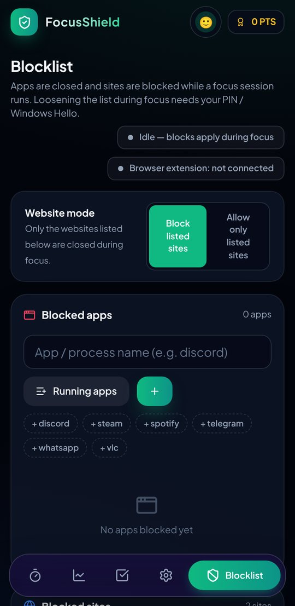

FocusShield is a Pomodoro timer that closes the apps and websites you choose while you work. It runs on your PC, in Chrome or Brave, and on your Android phone, all connected.
Free. No account needed. Your tasks and activity stay on your own devices.


Each theme changes the layout, the colors and the feel of the whole app, not just the accent. The phone app has the same four.




Install on the PC first. The extension and the phone connect to it, so they all share one timer and one blocklist.
Open FocusShield, choose a PIN, and add the apps and sites you want blocked while you work.
Pick a task, press Start. Blocked apps close and blocked sites redirect for the whole session.
The extension finds the PC app on its own. The phone pairs once with a QR code from the PC and then works from any network.
Activity shows focus hours, time per task, apps and websites, with a daily score and streak.
Four focus sessions, a short break between each, a long break after the fourth. Skipping a break earns bonus points.
Block programs on the PC, websites in the browser and apps on the phone. Or switch to allow-only mode where every site is closed except the ones you list.
Pausing, resetting or loosening the blocklist during focus asks for your PIN or Windows Hello. Strict mode locks it down further.
Break tasks into steps. Finish them all and the task completes and scores points. Pin any task as a floating glass or paper sticky note.
Select a task and start a session. Every focus minute is added to it, and Activity shows time per task.
Hourly focus chart, weekly Pomodoros and score, top apps and top websites, plus a daily goal and streak.
The Android app shows the same timer, tasks and settings. Start on one device and it runs on both. It closes the phone apps you chose.
Connect Spotify (Premium) and a focus playlist starts with your session and pauses on breaks.
Each user has their own tasks, progress, activity and settings on the same computer.
Three downloads. Start with Windows, then add the others.
FocusShield.exe.chrome://extensions (Brave: brave://extensions) and turn on Developer mode.The Windows app and the APK are not signed with a paid certificate, so Windows SmartScreen and Android Play Protect show a warning for any new, unsigned app. Choose "Run anyway" or "Install anyway" if you trust the source you got it from.
No account. Tasks and activity are stored on your PC. When you link a phone from another network, the messages pass through a public relay, fully encrypted with a key made from your pairing code, so the relay cannot read them. The browser extension talks directly to your PC. Spotify is the only other outside connection, and only if you connect it.
Yes. Choose "Use on this phone" and it runs alone with its own tasks, points and app blocking. You can link it to a PC later in Settings.
Yes. It uses Android's Accessibility service, and anyone can switch it off in system settings. It is a strong nudge, not a lock. The PC app has the PIN protection.
Make sure FocusShield is open on the PC with Phone companion turned on, and that both devices have internet. If you changed the pairing code on the PC, scan the new QR code.
Android 7.0 or newer. There is no iPhone version.